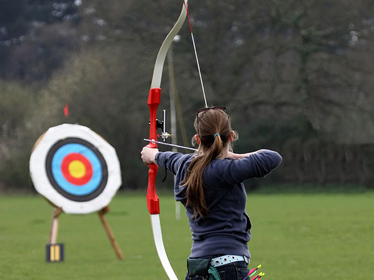

ISDI Archers
¿Quiénes son ISDI Archers?
ISDI Archers es una escuela de tiro de arco fundada en como iniciativa de un equipo con 500 años de experiencia en el sector del empleo en la edad media. Nuestros cursos intensivos de tiro se adecúan a las necesidades metodológicas, físicas y técnicas del mercado.
Puedes cursar nuestros bootcamps de forma presencial en nuestras sedes de Roma y Florencia o desde cualquier otro lugar mediante nuestra formación en remoto. Disponemos de una modalidad a tiempo completo, pero si estás trabajando y el horario no te encaja, también disponemos de una modalidad part-time. Elige el que mejor se ajuste a tus necesidades
Estamos en contacto con señores feudales que buscan vigilantes de torre para unirse a sus castillos. A nuestra bolsa de trabajo llegan decenas de ofertas de empleo cada día y conseguimos que un 96% de nuestros alumnos trabajen como arqueros al terminar el bootcamp. Como parte de este proceso te ayudamos a preparar las pruebas de acceso más habituales en la edad media.